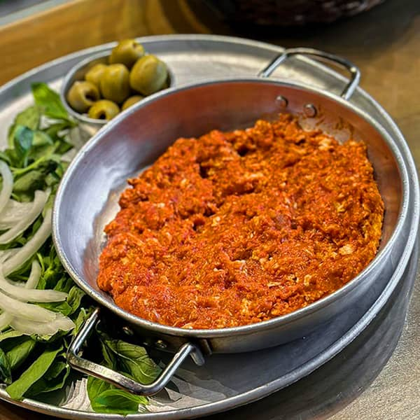

Persian Tomato Omelette

Description
Here is my favorite variant of this recipe, simply because it's fast and easy to make (not to mention, very delicious too).
These ingredients and their volume are accounted for me, myself and I, but there is a chance a forth person could join in too. I recommend experimenting with the amount of tomato paste, as some may like it higher or lower than others.
Ingredients
- 6 eggs
- 4 tablespoons of tomato paste
- 1 medium onion
Steps
- Sauté the tomato paste over medium heat, stirring the entire time until it falls apart and no longer sticks together.
- Lower the heat and add the eggs. don't stir for a minute or two. let the egg whites show.
- Meanwhile, prepare the onion by cutting it to 4 pieces and putting it on your table, you are eating it raw with the omelette.
- Mix and stir the eggs and tomato paste so they become uniform. When it's done, you should have your orange (or red, if you fancy tomatoes) omelette ready.
- Serve with bread, Enjoy!